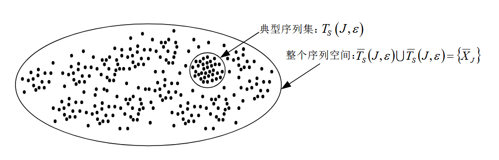
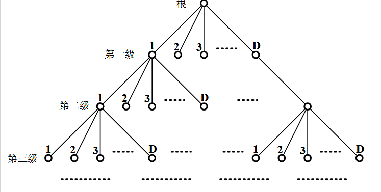

🌟 欢迎来到第4讲！—— 信源编码的基本概念与方法 #
本讲基于《数字通信原理》（冯穗力等编著，电子工业出版社2023年版）第四章第5节内容，聚焦信源编码的核心目标（提高传输效率），系统讲解离散无记忆信源（DMS）的定义、等长编码、不等长编码（含异字头码）及工程中常用的霍夫曼（Huffman）编码，揭示"去冗余、优码长"的编码逻辑。
📝 本讲主要内容 #
- 信源编码的核心目的与思路（去冗余、最大化符号信息量、不等长码设计）；
- 离散无记忆信源（DMS）的定义与编码基础（符号独立性、单符号/分组编码、唯一可译码）；
- 离散无记忆信源的等长编码（单符号/扩展编码、典型序列理论、可达速率）；
- 离散无记忆信源的不等长编码（异字头码、Kraft不等式、不等长编码定理、联合编码）；
- 霍夫曼编码的原理、步骤与优化（最优码设计、虚拟符号、码长均匀性）。
🔍 相关缩写 #
| 缩写 | 英文全称 | 中文含义 |
|---|---|---|
| DMS | Discrete Memoryless Source | 离散无记忆信源 |
| L | Size of Source Symbol Set | 信源符号集大小 |
| D | Size of Code Symbol Set | 码元集大小 |
| J | Length of Joint Coding Sequence | 联合编码的符号分组长度 |
| $\bar{n}$ | Average Code Length | 平均码长（单位：码元/信源符号） |
| $\eta$ | Coding Efficiency | 编码效率 |
| $\sigma\_C^2$ | Variance of Code Length | 码长方差 |
📚 4.5 信源编码的基本概念与方法（对应PPT第4.5节） #
信源编码的本质是去除信源输出中的冗余信息，使编码后的符号序列"信息量密度最大化"，最终提升传输效率（单位时间/带宽传输更多有效信息）。
4.5.1 离散无记忆信源（DMS）（对应PPT第4.5.1小节） #
DMS是信源编码的基础模型，其核心特征是"符号间无统计关联"，简化了编码设计；有记忆信源可通过去冗余处理转化为DMS。
1. DMS的基本定义 #
- 输出序列：$\dots X\_{-2}X\_{-1}X\_0X\_1X\_2\dots X\_n\dots$，其中每个符号$X\_i \in S = \\{S\_1, S\_2, \dots, S\_L\\}$（$L$为信源符号数）；
- 核心特性：任意符号$X\_i$与其他符号统计独立（$P(X\_iX\_j) = P(X\_i)P(X\_j)$，$i \neq j$）；
- 有记忆信源转化：通过"去冗余处理"（如差分编码、预测编码）消除符号间关联，可等效为DMS。
2. DMS的编码与译码基础 #
信源编码需将"信源符号集"映射到"码元集"，核心是保证译码唯一性，主要分为两类编码方式：
| 编码类型 | 定义 | 数学描述 |
|---|---|---|
| 单符号编码 | 对每个信源符号$S\_i$单独分配码字 | $S\_i \to \overline{Y}\_{n\_i}$（$\overline{Y}\_{n\_i}$为长度$n\_i$的码序列，$Y\_k \in C = \\{C\_1,\dots,C\_D\\}$） |
| 分组编码（联合编码） | 将$J$个信源符号分为一组$\overline{X}\_J = (X\_1,X\_2,\dots,X\_J)$，对每组分配码字 | $\overline{X}\_J \to \overline{Y}\_{n\_J} = C(\overline{X}\_J)$；译码：$\overline{X}\_J' = C^{-1}(\overline{Y}\_{n\_J})$ |
关键概念：唯一可译码 #
- 定义（定义4.5.1）：若不同信源符号/符号组对应不同码字，则为唯一可译码（避免译码歧义）；
- 唯一性必要条件：码元集大小为$D$、分组长度为$J$时，码字数需覆盖信源符号组数：
$\boxed{D^{n\_J} \geq L^J}$
（$n\_J$为每组码字长度，$L^J$为$J$个信源符号的组合数）。
3. 编码速率与编码效率 #
- 编码速率$R$（定义4.5.2）：单位信源符号携带的最大信息量（码元潜在信息量）：
- 等长编码（码字长度均为$n\_J$）：$R = \frac{1}{J} \cdot n\_J \log\_2 D$
- 不等长编码（平均码长$\overline{n}\_J$）：$R = \frac{1}{J} \cdot \overline{n}\_J \log\_2 D$
（单位：bits/信源符号，$\log\_2 D$为单个码元的最大信息量）；
- 编码效率$\eta\_C$（定义4.5.3）：信源实际熵（平均信息量）与编码速率的比值，反映编码有效性：
$\boxed{\eta\_C = \frac{H(S)}{R}}$
（$H(S)$为信源熵，$H(S) \leq \log\_2 L$；无信息丢失需$R \geq H(S)$，故$\eta\_C \leq 1$）。
4.5.2 离散无记忆信源的等长编码（对应PPT第4.5.2小节） #
等长编码的所有信源符号/符号组均采用相同长度的码字，设计简单但需通过"扩展编码"（增大$J$）提升效率。
1. 单符号等长编码 #
- 场景：对单个信源符号$S\_i$编码（$J=1$）；
- 唯一性条件：码字长度$n\_1$需满足：
$n\_1 \geq \frac{\log\_2 L}{\log\_2 D}$（若$\frac{\log\_2 L}{\log\_2 D}$非整数，取上整：$n\_1 = \lfloor \frac{\log\_2 L}{\log\_2 D} \rfloor + 1$）； - 编码效率：$\eta\_C = \frac{H(S)}{n\_1 \log\_2 D}$（因$n\_1$固定，若$H(S) < \log\_2 L$，效率较低）。
2. 扩展编码（联合等长编码） #
- 核心思路：将$J$个信源符号联合编码（$J>1$），利用符号间独立性降低冗余；
- 唯一性条件：每组码字长度$n\_J$需满足：
$n\_J \geq \frac{J \log\_2 L}{\log\_2 D}$（非整数时取上整）； - 平均每符号码元数：$\overline{n}\_1 = \frac{n\_J}{J}$（$J$越大，$\overline{n}\_1$越接近$\frac{H(S)}{\log\_2 D}$，效率越高）；
例4.5.1：扩展编码效率对比 #
对两个信源采用二进制（$D=2$）$J=4$联合编码：
| 信源 | 符号概率分布 | 信源熵$H(S)$ | $n\_J$（码字长度） | $\overline{n}\_1$（每符号码元数） | 编码效率$\eta\_C$ |
|---|---|---|---|---|---|
| 信源1 | 8个符号等概 （$P(S\_i)=1/8$） |
$3$ bits | $12$ （$2^{12} \geq 8^4$） |
$3$ | $3/(3 \times 1) = 1$（理想） |
| 信源2 | $P(S\_1' \sim S\_4')=1/16$，$P(S\_5' \sim S\_6')=1/8$，$P(S\_7' \sim S\_8')=1/4$ | $11/4=2.75$ bits | $12$ （同信源1） |
$3$ | $2.75/(3 \times 1) \approx 0.917$ |
结论：信源熵越接近$\log\_2 L$（符号越等概），编码效率越高；$J$增大可缩小效率差距。
3. 典型序列与有损等长编码 #
等长编码效率低的根源是"对所有符号序列编码"，而$J$足够大时，大部分序列为低概率非典型序列，可通过"只对高概率典型序列编码"实现有损压缩。
（1）典型序列的定义（定义4.5.4） #
对$J$长信源序列$\overline{X}\_J$，若其"平均自信息量"满足：
$\boxed{H(S) - \varepsilon \leq \frac{I(\overline{X}\_J)}{J} \leq H(S) + \varepsilon}$（$\varepsilon>0$为小正数），
则$\overline{X}\_J$属于**$\varepsilon$-典型序列集**$T\_S(J,\varepsilon)$，否则为非典型序列集$\overline{T\_S(J,\varepsilon)}$。
（2）信源划分定理（定理4.5.1） #
核心结论：当$J$足够大时，典型序列集的概率趋近于1：
$\lim\_{J \to \infty} P(\overline{X}\_J \in T\_S(J,\varepsilon)) = 1$
（非典型序列概率$\leq \varepsilon$，可忽略）。
（3）典型序列的关键特性 #
- 概率近似等概：$2^{-J[H(S)+\varepsilon]} \leq P(\overline{X}\_J) \leq 2^{-J[H(S)-\varepsilon]}$（$J$越大，越接近$2^{-J H(S)}$）；
- 数量近似：$|T\_S(J,\varepsilon)| \approx 2^{J H(S)}$（远小于总序列数$L^J$，占比$\alpha \to 0$）；
【典型序列集与非典型序列集示意图（标注"高概率小集合"与"低概率大集合"）】

4. 可达速率（定义4.5.5） #
- 定义：若存在$J\_0$，当$J>J\_0$时，编码译码误差概率$P\_E \leq \delta$（$\delta>0$任意小），则编码速率$R$为可达速率；
- 可达速率定理（定理4.5.2）：
- 若$R \geq H(S)$，则$R$可达（可实现低误差编码）；
- 若$R < H(S)$，则$R$不可达（误差无法消除）；
- 工程局限：$J$需极大（如例中$J \approx 10^6$）才能使$\eta\_C \to 1$，硬件实现困难，故等长编码较少单独使用。
4.5.3 离散无记忆信源的不等长编码（对应PPT第4.5.3小节） #
不等长编码对高概率信源符号分配短码字、低概率符号分配长码字，无需极大$J$即可实现高效率，是工程主流方案。
1. 不等长编码的核心概念 #
| 概念 | 定义 | 示例 |
|---|---|---|
| 逗点码（定义4.5.6） | 用特定符号标识码字起点（如"0"为分隔符：0, 01, 011） | 译码简单，但浪费码元 |
| 异字头码（定义4.5.7） | 任一码字不是其他码字的前缀（无分隔符也可即时译码） | 0, 10, 110（无歧义） |
| 平均码长（定义4.5.9） | 所有信源符号的码长加权平均：$\boxed{\overline{n} = \sum\_{i=1}^L n\_i P(S\_i)}$ | $P(S\_1)=3/4,n\_1=1；P(S\_2)=1/4,n\_2=2$，则$\overline{n}=1.25$ |
2. 异字头码的设计：编码树 #
异字头码可通过"编码树"直观设计，确保无前缀歧义：
- 编码树结构：根节点→分支（$D$个，对应$D$个码元）→端节点（对应信源符号，无后续分支）；
- 关键原则：端节点（码字）不位于其他端节点的路径上（避免前缀）；
【三进制编码树示意图（标注"根节点"“分支"“端节点"“码字”）】

异字头码的编码步骤 #
- 将信源符号按概率分组，使每组概率尽可能等概（匹配$D$个分支）；
- 对每组分配1位码元，再对每组内符号递归分组，直至每个分组仅含1个符号；
例：三进制（$D=3$）异字头编码 #
信源符号：$S\_1(1/3), S\_2 \sim S\_7(1/9), S\_8 \sim S\_{15}(1/27)$，编码结果如下：
| 信源符号 | 概率 | 第一次分组（码元） | 第二次分组（码元） | 第三次分组（码元） | 码字 |
|---|---|---|---|---|---|
| $S\_1$ | 1/3 | 0（单独分组） | - | - | 0 |
| $S\_2 \sim S\_4$ | 1/9 each | 1（3个符号，概率和1/3） | 0,1,2 | - | 10,11,12 |
| $S\_5 \sim S\_7$ | 1/9 each | 2（前3个符号，概率和1/3） | 0,1,2 | - | 20,21,22 |
| $S\_8 \sim S\_{15}$ | 1/27 each | 2（后8个符号，概率和8/27，补1个0概率符号） | 2（概率和9/27=1/3） | 0~2 | 220~222 |
3. 异字头码的存在条件：Kraft不等式 #
- 定理4.5.3（充要条件）：$D$元异字头码存在，当且仅当码长$n\_1,n\_2,\dots,n\_L$满足：
$\boxed{\sum\_{i=1}^L D^{-n\_i} \leq 1}$； - 推论（定理4.5.4）：任一唯一可译码必满足Kraft不等式（异字头码是唯一可译码的"最小表示”）。
4. 不等长编码定理（定理4.5.5） #
核心结论：对$D$元编码，唯一可译码的平均码长满足：
- 下界：$\boxed{\overline{n} \geq \frac{H(S)}{\log\_2 D}}$（无法突破信源熵的极限）；
- 上界：$\boxed{\overline{n} < \frac{H(S)}{\log\_2 D} + 1}$（平均码长最多比下界大1个码元，效率高）；
5. 联合不等长编码 #
- 思路：将$J$个信源符号联合编码（类似扩展编码），进一步降低$\overline{n}\_1$；
- 单符号平均码长：$\overline{n}\_1 = \frac{\overline{n}(\overline{X}\_J)}{J}$（$\overline{n}(\overline{X}\_J)$为$J$长序列的平均码长）；
- 效率提升：$J$增大时，$\overline{n}\_1 \to \frac{H(S)}{\log\_2 D}$，$\eta\_C \to 1$（$J$无需极大，工程易实现）；
例4.5.7：联合不等长编码效率对比 #
信源：$S\_1(3/4), S\_2(1/4)$，二进制编码（$D=2$）：
| 编码方式 | 信源熵$H(S)$ | 平均码长$\overline{n}$ | 编码速率$R$ | 编码效率$\eta\_C$ |
|---|---|---|---|---|
| 单符号编码 | 0.811 bits | $\overline{n}=1$（0→S1，1→S2） | $1 \times 1=1$ bits | $0.811/1=0.811$ |
| 双符号联合编码 | 0.811 bits | $\overline{n}(\overline{X}\_2)=27/16 \approx 1.6875$（S1S1→0，S1S2→10，S2S1→110，S2S2→111） | $\frac{27}{32} \times 1 \approx 0.8438$ bits | $0.811/0.8438 \approx 0.961$ |
结论：联合不等长编码可显著提升效率，且$J$无需过大（如$J=2$即可从0.811提升至0.961）。
4.5.4 霍夫曼（Huffman）编码（对应PPT第4.5.4小节） #
霍夫曼编码是最优不等长编码（平均码长最短），严格遵循"高概率短码、低概率长码”，工程实现简单。
1. 霍夫曼编码的基本思想 #
- 核心：通过"反复合并$D$个最小概率符号"，构建编码树，确保概率越大的符号路径越短（码长越短）；
- 优势：平均码长$\overline{n}$最接近下界$\frac{H(S)}{\log\_2 D}$，是唯一可译码中的最优方案。
2. 霍夫曼编码的实现步骤（$D$进制） #
标准步骤（符号数$L$满足$L = a(D-1) + 1$） #
- 排序：将$L$个信源符号按概率从大到小排序；
- 合并与编码：取$D$个最小概率符号，分别赋予码元$1,2,\dots,D$，合并为1个新符号（概率为$D$个符号概率和）；
- 递归：对新符号集（数量减少$D-1$）重复步骤1-2，直至剩余$D$个符号；
- 生成码字：从最后一次编码反向追溯，拼接码元得到每个信源符号的码字；
特殊处理（$L \neq a(D-1) + 1$） #
- 问题：若不满足上述条件，最后一次合并时符号数不足$D$，会导致码长方差增大；
- 解决方案：添加$m = D - [L - a(D-1)]$个概率为0的虚拟符号，使总符号数$L+m = a(D-1) + 1$，再按标准步骤编码（虚拟符号的码字丢弃）；
3. 霍夫曼编码示例（三进制$D=3$） #
信源符号：$S\_1(0.24), S\_2(0.20), S\_3(0.18), S\_4(0.16), S\_5(0.14), S\_6(0.08)$（$L=6$，需添加$m=1$个虚拟符号$S\_7(0)$）：
| 步骤 | 符号集（概率排序） | 合并操作（$D=3$个最小概率） | 码元分配 | 新符号概率 |
|---|---|---|---|---|
| 初始 | $S1(0.24), S2(0.20), S3(0.18), S4(0.16), S5(0.14), S6(0.08), S7(0)$ | 合并$S6(0.08), S7(0), S5(0.14)$ | 2,1,0 | $0.08+0+0.14=0.22$ |
| 第一次递归 | $S1(0.24), 新1(0.22), S2(0.20), S3(0.18), S4(0.16)$ | 合并$S4(0.16), S3(0.18), S2(0.20)$ | 2,1,0 | $0.16+0.18+0.20=0.54$ |
| 第二次递归 | $新2(0.54), S1(0.24), 新1(0.22)$ | 合并3个符号（剩余$D=3$个） | 2,1,0 | - |
| 生成码字 | - | 反向追溯码元 | - | 最终码字：$S1→1, S2→20, S3→21, S4→22, S5→00, S6→02$ |
4. 码长均匀性：方差优化 #
- 码长方差（定义4.5.13）：$\boxed{\sigma\_C^2 = \sum\_{i=1}^L P(S\_i)(n\_i - \overline{n})^2}$（反映码长波动程度）；
- 优化原则：合并符号时，将"概率和"置于相同概率的最高位置，减少重复编码次数，降低方差；
例：码长方差对比（二进制编码，信源$S1(0.4), S2(0.2), S3(0.2), S4(0.1), S5(0.1)$） #
| 编码方式 | 平均码长$\overline{n}$ | 码长方差$\sigma\_C^2$ | 关键操作 |
|---|---|---|---|
| 方式1（概率和置低位） | 2.2 | 1.36 | 合并后符号排在相同概率的下方 |
| 方式2（概率和置高位） | 2.2 | 0.16 | 合并后符号排在相同概率的上方 |
结论：相同平均码长下，方差越小，传输越稳定（适配FIFO缓存，避免码长波动导致的溢出/空等）。
5. 多符号联合霍夫曼编码 #
- 思路：将$J$个信源符号视为一个"超级符号"，对超级符号进行霍夫曼编码；
- 优势：进一步降低平均码长，提升编码效率（$J$增大，$\overline{n}\_1 \to \frac{H(S)}{\log\_2 D}$）；
- 局限：$J$过大会导致超级符号数$L^J$激增，存储与计算复杂度升高（工程中$J$通常取2~8）。
📌 本讲小结 #
- 信源编码目标：去冗余、最大化信息密度，核心指标是编码效率$\eta\_C$；
- DMS模型：符号独立，是编码设计的基础；有记忆信源需先去冗余转化为DMS；
- 等长编码：结构简单，但需极大$J$才能高效（工程难实现），典型序列理论为其提供有损压缩思路；
- 不等长编码：高概率短码、低概率长码，效率高；异字头码是主流形式，满足Kraft不等式即可实现；
- 霍夫曼编码：最优不等长编码，平均码长最短；通过合并最小概率符号生成，需注意虚拟符号与方差优化；
| 编码方式 | 优点 | 缺点 | 适用场景 |
|---|---|---|---|
| 等长编码 | 译码简单、无码长波动 | 效率低、需极大$J$ | 简单低速场景（如控制信号） |
| 不等长编码（异字头） | 效率高、$J$小 | 译码需缓冲 | 中高速数据传输 |
| 霍夫曼编码 | 最优平均码长、效率最高 | 方差需优化、复杂度略高 | 主流数据压缩（如JPEG、ZIP） |
核心公式汇总：
- 唯一可译码条件：$D^{n\_J} \geq L^J$
- 编码效率：$\eta\_C = \frac{H(S)}{R}$
- Kraft不等式：$\sum\_{i=1}^L D^{-n\_i} \leq 1$
- 不等长编码定理：$\frac{H(S)}{\log\_2 D} \leq \overline{n} < \frac{H(S)}{\log\_2 D} + 1$
- 码长方差：$\sigma\_C^2 = \sum\_{i=1}^L P(S\_i)(n\_i - \overline{n})^2$